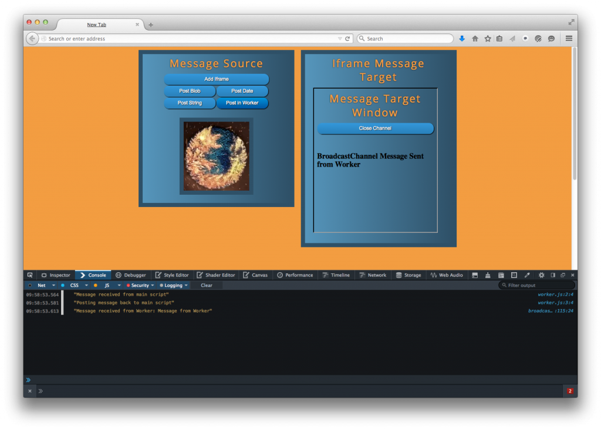

BroadcastChannel API 最近已經進入 Firefox 38。若網頁內容的來源及其所使用的瀏覽器均相同，則此 API 就能在瀏覽器的內容之間進行簡單的訊息傳遞作業。此 API 現已擴充到 Windows 與 Worker 之上，並可於 iframes、Worker、瀏覽器分頁的執行緒之間進行通訊。
BroadcastChannel API 本來是想在 Web App 瀏覽器的內容之間，進行簡易的訊息通訊作業。舉例來說，只要使用者登入 App 的網頁之一，即可依其個人資訊而更新其他所有的內容 (如分頁或獨立視窗)。或是使用者將照片上傳到瀏覽器視窗，亦可一併傳送到該 App 之內所開啟的其他頁面。此 API 本不是為了處理複雜作業所設計。如鎖定已分享的資源，或透過伺服器同步多個用戶端等的複雜作業，則 Shared worker 還更適合。
API 概述
我們可用下列程式碼建立 BroadcastChannel 物件：
var myChannel = new BroadcastChannel("channelname");
1
var myChannel = new BroadcastChannel("channelname");
channelname 的大小寫有別。BroadcastChannel 實例包含兩組函式，即 postMessage 與 close。函式 postMessage 可寄送訊息到 channel。而訊息內容可為任何物件，包含圖片、陣列、物件陣列等的複雜物件。只要瀏覽器內容的來源、使用的瀏覽器、BroadcastChannel 的頻道名稱均相同，都會收到訊息。舉例來說，下列程式碼就會送出簡單字串：
myChannel.postMessage("Simple String");
1
myChannel.postMessage("Simple String");
任何頁面只要搭配 BroadcastChannel 物件的 onmessage 事件處理器來開啟頻道，都能處理所分派出的訊息。
myChannel.onmessage = function(event) {
console.log(event.data);
}
123
myChannel.onmessage = function(event) { console.log(event.data);}
另請注意，事件的資料屬性包含了訊息資料，且你也可能想了解事件的其他屬性。舉例來說，你可透過 event.origin 屬性，或 event.target.name 屬性中看到的頻道名稱來檢查 Web App 的來源。
而 close 函式可關閉特定瀏覽器內容的頻道，只要以下程式碼即可呼叫：
broadCastChannel.close();
1
broadCastChannel.close();
張貼 Blob 訊息
傳送字串或其他基本型別的資料都很簡單，但其實 BroadcastChannel API 仍可支援更複雜的物件。舉例來說，如果要將圖片傳送到另一組內容中，可使用下列程式碼：
var broadcastExample = {};
broadcastExample.setupChannel = function() {
if ("BroadcastChannel" in window) {
if (typeof broadcastExample.channel === 'undefined' ||
!broadcastExample.channel) {
//create channel
broadcastExample.channel = new BroadcastChannel("foo");
}
}
}
broadcastExample.pMessage = function() {
broadcastExample.setupChannel();
//get image element
var img = document.getElementById("ffimg");
//create canvas with image
var canvas = document.createElement("canvas");
canvas.width = img.width;
canvas.height = img.height;
var ctx = canvas.getContext("2d");
ctx.drawImage(img, 0, 0);
//get blob of canvas
canvas.toBlob(function(blob) {
//broadcast blob
broadcastExample.channel.postMessage(blob);
});
}
1234567891011121314151617181920212223242526
var broadcastExample = {};broadcastExample.setupChannel = function() { if ("BroadcastChannel" in window) { if (typeof broadcastExample.channel === 'undefined' || !broadcastExample.channel) { //create channel broadcastExample.channel = new BroadcastChannel("foo"); } }}broadcastExample.pMessage = function() { broadcastExample.setupChannel(); //get image element var img = document.getElementById("ffimg"); //create canvas with image var canvas = document.createElement("canvas"); canvas.width = img.width; canvas.height = img.height; var ctx = canvas.getContext("2d"); ctx.drawImage(img, 0, 0); //get blob of canvas canvas.toBlob(function(blob) { //broadcast blob broadcastExample.channel.postMessage(blob); });}
上列程式碼包含兩組函式，代表 BroadcastChannel 的傳送端。setupChannel 函式僅會開啟 BroadcastChannel，而 pMessage 函式則檢查頁面的圖素並將之轉換為 Blob。最後將 Blob 張貼到 BroadcastChannel。接收頁面必須已準備監聽 BroadcastChannel 完畢以利接收訊息，且可將接收頁面撰寫如下：
var broadcastFrame = {};
//setup broadcast channel
broadcastFrame.setup = function() {
if ("BroadcastChannel" in window) {
if (typeof broadcastFrame.channel === 'undefined' || !broadcastFrame.channel) {
broadcastFrame.channel = new BroadcastChannel("foo");
}
//function to process broadcast messages
function func(e) {
if (e.data instanceof Blob) {
//if message is a blob create a new image element and add to page
var blob = e.data;
var newImg = document.createElement("img"),
url = URL.createObjectURL(blob);
newImg.onload = function() {
// no longer need to read the blob so it's revoked
URL.revokeObjectURL(url);
};
newImg.src = url;
var content = document.getElementById("content");
content.innerHTML = "";
content.appendChild(newImg);
}
};
//set broadcast channel message handler
broadcastFrame.channel.onmessage = func;
}
}
window.onload = broadcastFrame.setup();
123456789101112131415161718192021222324252627282930
var broadcastFrame = {}; //setup broadcast channelbroadcastFrame.setup = function() { if ("BroadcastChannel" in window) { if (typeof broadcastFrame.channel === 'undefined' || !broadcastFrame.channel) { broadcastFrame.channel = new BroadcastChannel("foo"); } //function to process broadcast messages function func(e) { if (e.data instanceof Blob) { //if message is a blob create a new image element and add to page var blob = e.data; var newImg = document.createElement("img"), url = URL.createObjectURL(blob); newImg.onload = function() { // no longer need to read the blob so it's revoked URL.revokeObjectURL(url); }; newImg.src = url; var content = document.getElementById("content"); content.innerHTML = ""; content.appendChild(newImg); } }; //set broadcast channel message handler broadcastFrame.channel.onmessage = func; }}window.onload = broadcastFrame.setup();
此程式碼可從廣播訊息中取得 Blob 並建立圖素，再加入接收端頁面。
Workers 與 BroadcastChannel 訊息
BroadcastChannel API 亦可搭配專屬與共用的workers。先簡單假設現已啟動 worker，且已透過主要指令碼傳送一則訊息到該 worker，接著就會由 worker 廣播訊息到 BroadcastChannel。
var broadcastExample = {};
broadcastExample.setupChannel = function() {
if ("BroadcastChannel" in window) {
if (typeof broadcastExample.channel === 'undefined' ||
!broadcastExample.channel) {
//create channel
broadcastExample.channel = new BroadcastChannel("foo");
}
}
}
function callWorker() {
broadcastExample.setupChannel();
//verify compat
if (!!window.Worker) {
var myWorker = new Worker("worker.js");
//ping worker to post to Broadcast Channel
myWorker.postMessage("Broadcast from Worker");
}
}
//Worker.js
onmessage = function(e) {
//Broadcast Channel Message with Worker
if ("BroadcastChannel" in this) {
var workerChannel = new BroadcastChannel("foo");
workerChannel.postMessage("BroadcastChannel Message Sent from Worker");
workerChannel.close();
}
}
12345678910111213141516171819202122232425262728293031
var broadcastExample = {};broadcastExample.setupChannel = function() { if ("BroadcastChannel" in window) { if (typeof broadcastExample.channel === 'undefined' || !broadcastExample.channel) { //create channel broadcastExample.channel = new BroadcastChannel("foo"); } }} function callWorker() { broadcastExample.setupChannel(); //verify compat if (!!window.Worker) { var myWorker = new Worker("worker.js"); //ping worker to post to Broadcast Channel myWorker.postMessage("Broadcast from Worker"); }} //Worker.jsonmessage = function(e) { //Broadcast Channel Message with Worker if ("BroadcastChannel" in this) { var workerChannel = new BroadcastChannel("foo"); workerChannel.postMessage("BroadcastChannel Message Sent from Worker"); workerChannel.close(); }}
接著就會依本文前述過的相同方式，於主頁面中處理該則訊息。

以 Worker 廣播訊息至 iframe
更多資訊
如果要進一步了解該如何於 iframe 中使用，則可到github 找到本文所提的另一組範例程式碼。另可透過到規格、bugzilla 討論串、MDN 進一步了解BroadcastChannel API。亦可到 gecko原始碼找到此 API 的程式碼與測試頁面。